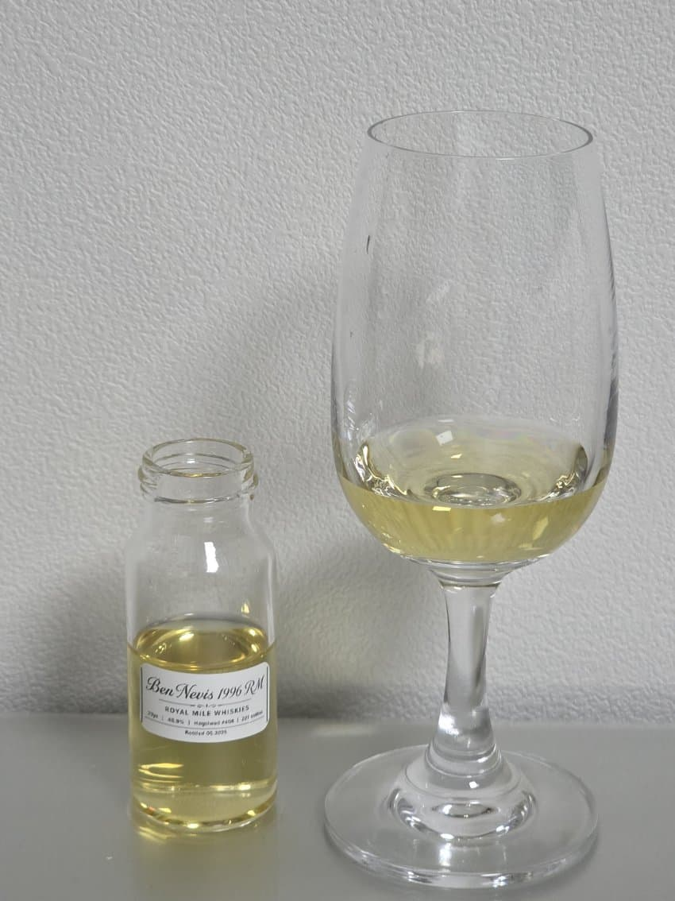

로얄마일 벤네비스 29년 1996
N) 치즈, 요거트, 생크림, 레몬그라스, 라임껍질, 청사과, 백도복숭아, 파인애플, 바닐라, 플로럴, 그래시
잔에서 천천히 올라오는 치즈와 요거트의 꼬릿한 유산취, 그리고 생크림의 부드러운 크리미함이 고소하게 비강에 들어온다
풋내나는 레몬그라스와 라임껍질의 시트러스가 산뜻하게 치고 들어오며, 막 깎은 청사과의 풋풋한 과즙이 퍼진다
잘 익은 백도복숭아의 몰랑한 과육과 파인애플의 달콤한 과즙이 이어지고,
바닐라의 부드러운 단내가 은은하게 깔린다
시간이 지나면 하얀 꽃다발을 코앞에 가져다 댄 듯한 플로럴과 갓 베어낸 풀내음 같은 그래시함이 천천히 올라온다
P) 오일리+왁시, 그릭요거트, 치즈, 백도복숭아, 레몬, 라임껍질, 청사과, 배, 파인애플, 리치, 바닐라, 플로럴, 허브
입 안에서는 오일리하고 왁시한 질감이 혀를 가볍게 코팅한다
그릭요거트와 치즈의 콤콤란 유산취가 가볍게 퍼지고, 백도복숭아 과육을 베어문 듯한 달콤함이 뒤따른다
레몬과 라임껍질의 산뜻한 시트러스가 혀를 자극하고, 청사과와 배의 시원한 과즙이 입 안을 달콤하게 채운다
파인애플과 리치의 열대과일 향이 점점 진해지며, 바닐라의 달콤함과 화사한 꽃내음이 함께 이어진다
끝에서는 허브의 은은한 잔향이 살짝 남으며 마무리된다
F) 유산취, 백도복숭아, 시트러스, 청사과, 배, 트로피컬, 바닐라, 플로럴, 허브
피니시에서는 요거트와 치즈의 유산취가 가볍게 남는다
백도복숭아와 청사과, 배의 프루티한 잔향이 쭉 이어지고
레몬 계열의 시트러스가 입 안을 상쾌하게 정리한다
뒤이어 파인애플과 리치를 연상시키는 시원한 트로피컬함이 은은하게 남고, 바닐라와 플로럴이 부드럽게 이어진다
끝까지 허브의 산뜻한 쌉쌀함이 입 안에 쭉 남는다
결론) 벤네비스 특유의 발효된 유산취와 프루티함이 공존하는 바틀
치즈와 요거트의 펑키함이 과하지 않게 깔려 있고, 백도복숭아와 리치, 파인애플이 화사하게 터져나온다
댓글 4개